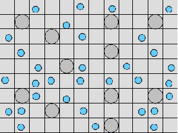

IS-HIC
AbstractThe functional unit of IS-HIC is the hepatocyte, which is one component of the ISL and bears primary responsibility for metabolizing compounds found in the blood. The IS-HIC framework measures the extraction or clearance (CL) of compounds (in this case drugs) from the injected solution by the in silico hepatocytes. Where the ISL models hepatocytes in the context of their spatial and functional roles as a part of a lobule, the IS-HIC arranges the hepatocytes on a 2 dimensional grid as if they were in a petri dish. There is no blood flow and the hepatocytes simply sit in the solution and act upon compound molecules as they come into contact with them. In the ArtModel, hepatocytes are placed randomly in a 2D grid as fixed objects. Drug (and other) mobile objects are then randomly placed within the space (external to all hepatocytes) based on the initial concentrations of those compounds. The mobile objects move around pseudo-randomly, while the hepatocytes have the opportunity to take up and metabolize them. As the simulation progresses, the number of solute objects decreases as a consequence of metabolism. At intervals this number is counted, normalized and scaled to represent the concentration of the compound. Hepatocytes are very complex cells whose behavior can vary widely depending on their context. We began the IS-HIC partly to help develop these complex components separately from the ISL and partly as a mechanism to build a model of hepatocyte behavior in vitro. The aspect of this framework of methodological interest lies primarily in the fact that it is a simpler FURM construction and allows us to demonstrate elements and consequences of FURM that become more difficult with the more complex ISL. It also provides a test-bed for more advanced additions and developments to FURM like automatic selection and optimization of successful models and variations in SMs. However, the experimental framework of the IS-HIC is scientifically relevant to the study of hepatocytes and should help posit generative mechanisms at an even lower scale. MethodsThe IS-HIC ArtModel consists of three basic components, solute objects, hepatocytes and a WanderSpace. The solute objects and hepatocyte agents are the exact same as the corresponding components used in the ISL [9]. (a) A single hepatocyte  (b) Hepatocytes and solute objects in the 2D space Fig1 Solute objects: solute objects are the mobile objects representing a group of molecules of the chemical compound (the test drug) as they move around in the reaction mixture. These in silico objects can be parameterized to make their behavior similar to that of a drug in vitro. The more relevant parameters are as follows. SoluteBindingProb: The probability that a specific type of drug object will bind to a Binder within a hepatocyte. SoluteBindingCycles: The number of steps that a drug object remain attached to a Binder; MembraneCrossing: indicates whether a compound can or cannot enter hepatocytes.A solute object is destroyed once it is “metabolized.”Metabolites are not currently tracked. Binder: Objects within hepatocyte agents that can both bind and metabolize compounds.Each Binder represents a fraction of all subcellular components that can bind or sequester a drug object, and includes a fraction of all metabolizing enzymes. Hepatocytes: These objects are the agents representing the isolated hepatocytes suspended in the in vitro cell culture media. They are capable of taking in, binding and metabolizing drug objects.The parameters are: BindersPerCellMin, BindersPerCellMax: Minimum and maximum binders per cell, respectively. MetabolizationProb: The probability that the cell metabolizes an attached solute object at the end of its binding period. WanderSpace is a fine-grained space, representing the in vitro cell culture, in which solute objects and hepatocytes interact with each other. SpaceWidth, SpaceLength: Width and length of WanderSpace. HepDensity: The density of hepatocytes in the space. TotalSoluteMass: The total compound mass initially added to WanderSpace. Functioning of the IS-HIC ArtModel: First, hepatocyte agents are placed randomly in the WanderSpace as fixed objects. Drug (and other) mobile objects are then randomly placed within the space (external to all hepatocytes) based on an initial concentration (see Figure 1). The mobile objects move randomly, while the hepatocytes have the opportunity to “take up” and then metabolize nearby solute objects. Fig 2 RefModelThe metabolic rate decreases in proportion to the local drug concentration as given by equation (1), where k is a first order rate constant [12] dC/dt = -kC(t) (1) Intrinsic clearance is a measure of enzyme activity, and is independent of physiological factors such as the liver blood flow or drug binding in the blood. In vitro, the intrinsic clearance of a drug is commonly expressed by equation 2, where Cs is the concentration of the unbound drug at the enzyme site[12]. Rate of metabolism: V = CLint Cs (2) Rate of metabolism is generally defined by the Michaelis-Mention enzyme kinetics relationship. When the drug concentration is much smaller than Km (the Michaelis-Mention constant), CLint becomes: CLint = V/Cs (3) What we need for our mathematical reference model, is an equation that describes the concentration of the unchanged drug as a function of time. Researchers use the following equation to express the concentration of unchanged drug for in vitro experiments, when keeping the initial drug concentration much smaller than Km: dC/dt=-CL*D*C(t) (4) where C(t) is the concentration, CL the in vitro clearance of the drug and D the cell density. By solving differential equation (4) the amount of drug remaining after incubation time T is expressed as follows: C(T)=C(0)*exp(-CL*D*T) (5) The basic equations explained above cannot be applied to all drugs, but they are applicable to the drugs and conditions selected for this study, and so we use equation 5 to express in vitro clearance and to be the reference model for IS-HIC. DatModelThe DatModel represents the real biological system. It contains the data obtained from in vitro experiments, and is used to validate the in silico model (ArtModel). The validation process involves measuring the output of the in silico model and comparing it with the data provided by DatModel. In this work the data was obtained from Fig. 2 of [11], which depicts the time course for nine unchanged compounds in cell culture media containing freshly isolated rat hepatocytes different compounds. The data points were carefully obtained from the graphs using computer design tools. The DatModel interpolates the data points using a linear interpolation method to estimate the drug concentration at each time step of the simulation. The Similarity MeasureAfter each in silico experiment a similarity measure algorithm compares the output of that experiment with the data provided by DatModel and assigns a score to the output based on the degree of their similarity. Several similarity measure algorithms are surveyed in [13]. The similarity measure used in this work was the measure calculated by the "global standard deviation" method [13], with a wider envelope: upperi = mi (1 + sd) + 10, loweri = mi (1 - sd) - 10, where mi and sd are the nominal mean and standard deviation of the time series (for additional detail see [13]). This score is calculated by counting the number of observations of the candidate time series that fall within the envelope and dividing that by the total observations in the series [13], as a result similatiry_score is in [0,1]. Model OptimizationBy model optimization we mean finding a set of model parameter values for ArtModel which produce the maximum possible similarity score. Several simulation optimization methods are surveyed in [17], including the Nelder and Mean simplex search method. The Nelder and Mead algorithm, introduced in [18] for the first time, has been used widely to solve parameter estimation problems for almost 40 years. Despite its age it is still the method of choice for many practitioners in the fields of statistics, engineering and the physical and medical sciences because it is straightforward to code and easy to use. Particularly, it’s been used widely by researchers for simulation optimization [18-22]. It belongs to a class of methods which do not require derivatives and which are often claimed to be robust for problems with discontinuities or where function values are noisy. This property makes it a good candidate for optimizing our stochastic in silico simulation. There are several different versions and extensions of this optimization algorithm. We used the one described in [16] to optimize our parameters. Figure 3 shows the simplex algorithm employed in this paper. qbest, qworst and qnext-worst are the best, worst and next worst vertex of the simplex. There are four basic operations used in this algorithm: reflect, contract, expand and shrink each of which is depicted for a 2D simplex in Figure 4. The general heuristic in this search method is to move away from the worst point toward the best. Fig 3 Fig 4 Results8 chemicals from [11] were chosen as our test drugs to be cleared in silico by simulated rat hepatocytes. In vitro, each compound (at a concentration of 1000 µM) had been incubated for various time periods at 37°C with freshly isolated rat hepatocytes. The cell density in the reaction mixture is reported 0.5´106 (cells/ml) for FK1052 and Diltiazem, and 1´106 (cells/ml) for Acetaminophen. Calculation of parameter. Because the Hepatocytes and the test drug are in the same volume of mixture: P1/P2=C1/C2 For example consider FK1052: P1/P2=1000(pmol/ml)/0.5e6(cells/ml)=1000(fmol)/500(cells) To encompass 500 cells we need 0.001ml of the mixture (V = cells/cell-density = 500/.5´106 = 0.001ml). Assuming each spot in the WanderSpace corresponds to 350´10-9 ml of the mixture, for 0.001ml we will need 2857 spots. So we chose the WanderSpace to be 53 by 54 (=2862). Other parameters were chosen as follows: HepDensity = 500/2857 = 0.175, TotalSoluteMass = 1000 fmol. Other parameters (SoluteBindingProb,SoluteBinding- Cycles, BindersPerCe-llMin, BindersPerCellMax and MetabolizationProb) were iteratively searched to optimize the output –an acceptable similarity score was attained. We used the Nedler and Mead simplex method [16] to optimize the parameters. This method has been frequently used for optimization of stochastic simulation models, where one tries to estimate the model parameters that optimize some specific output of the simulation model [16]. The parameter values are summarized in Table 1. Figure 5 shows the output of the IS-HIC ArtModel using above parameterization along with in vitro clearance profiles of 8 drugs. The simulation results are in a good agreement with both the mathematical model and the in vitro data. Table 1: The parameter values
REFERENCES[1] Hunt, C.A., G.E.P. Ropella, M.S. Roberts, and L. Yan, 2004, “Biomimetic In Silico Devices. Computational Methods in Systems Biology,” Second International Workshop, CMSB 2004 (Paris, France, May 26-28, 2004) Proceedings. Lecture Notes in Bioinformatics, Springer (in press); available at http://biosystems.ucsf.edu/Researc/RecentPapers/HuntCMSB04b.pdf. [2] Leahy, D.E., 2004, “Drug Discovery Information Integration: Virtual Humans for Pharmacokinetics,” DDT: Biosilico. 2, no. 2: 78-84. [3] Lipscomb, J.C., M. Meek, K. Krishnan, G.L. Kedderis, H. Clewell, and L. Haber, 2004, “Incorporation of Pharmacokinetic and Pharmacodynamic Data Into Risk Assessments,” Toxicology Mechanisms and Methods, 14, no. 3: 145-158. [4] Gunaratna, C., 2001, “Drug Metabolism and Pharmacokinetics in Drug Discovery: A Primer for Bioanalytical Chemists, Part II,” Current Separations, 19, no. 3 (www.currentseparations.com/issues/19-3/19-3e.pdf. [5] Venkatakrishnan, K., L.L. von Moltke, and D.J. Greenblatt, 2001, “Human Drug Metabolism and the Cytochromes P450: Application and Relevance of In Vitro Models,” Journal of Clinical Pharmacology, 41, no. 11: 1149-1179. [6] Takahashi, K., K. Kaizu, B. Hu, and M. Tomita, 2004, “A Multi-algorithm, Multi-timescale Method for Cell Simulation,” Bioinformatics, 20, no. 4: 538-46. [7] Meng,T.C., S. Somani, and P. Dhar, 2004, “Modeling and Simulation of Biological Systems with Stochasticity,” In Silico Biology, 4, 0024. [8] S. Eklins, 2003, “In Silico Approaches to Predicting Drug Metabolism, Toxicology and Beyond,” Biochemical Society Transactions, 31,(Pt 3): 611-4. [9] Ropella, G.E.P., and C.A. Hunt, 2003, “Prerequisites for Effective Experimentation in Computational Biology,” 25th Annual Conference of the IEEE Engineering in Medicine and Biology Society (Cancun, September 17-21, 2003); available at http://128.218.188.153:8080/~gepr/furm/docs/EMBC03Paper1.pdf. [10] Daniels, M., 1999, “Integrating Simulation Technologies with Swarm,” Agent Simulation: Applications, Models and Tools Conference (University of Chicago, October 1999); available at http://www.santafe.edu/~mgd/anl/anlchicago.html .[1] [11] Naritomi,Y., S. Terashita, A. Kagayama, and Y. Sugiyama, 2003, “Utility of Hepatocytes in Predicting Drug Metabolism: Comparison of Hepatic Intrinsic Clearance in Rats and Humans In Vivo and In Vitro,” Drug Metabolism and Disposition, 31, no. 5: 580-588. [12] Shibata, Y., H. Takahashi, and Y. Ishii, 2000, “A Convenient In Vitro Screening Method for Predicting In Vivo Drug Metabolic Clearance Using Isolated Hepatocytes Suspended in Serum,” Drug Metabolism and Disposition, 28, no. 12: 1518-1523. [13] Ropella, G.E.P., D.A. Nag, and C.A. Hunt, 2000, “Similarity Measures for Automated Comparison of In Silico and In Vitro Experimental Results,” ibid; available at http://128.218.188.153:8080/~gepr/furm/docs/EMBC03Paper2.pdf . [14] Treijtel, N., A. Barendregt, A.P. Freidig, B.J. Blaauboer, and J.C.H. van Eijkeren, 2004, “Modeling the In Vitro Intrinsic Clearance of the Slowly Metabolized Compound Tolbutamide Determined in Sandwich-Cultured Rat Hepatocytes,” Drug Metabolism and Disposition, 32, no. 8: 884-891. [15] Haenen, B., C. Rompelberg, K. Van Twillert, M. Hamzink, J. Dormans, and J. Van Eijkeren, 2002, “Utility of Rat Liver Slices to Estimate Hepatic Clearance for Application in Physiologically Based Pharmacokinetic Modeling: A Study With Tolbutamide, a Compound with Low Extraction Efficiency,” Drug Metabolism and Disposition, 30, no. 3: 307-313. [16]H.G. Neddermeijer & G.J. van Oortmarssen & N. Piersma & R. Dekker, 2000, "Adaptive extensions of the Nelder and Mead Simplex Method for optimization of stochastic simulation models," Econometric Institute Report 199, Erasmus University Rotterdam, Econometric Institute.
| ||||||||||||||||||||||||||||||||||||||||||||||||||||||||||||||||||||||||||||||||||||||||||||||||||||||||||||||||||||||||||||||||||||||||||||||||||||||||||||||||||||
{kind=link}
{kind=link}
{kind=link}
{kind=link}